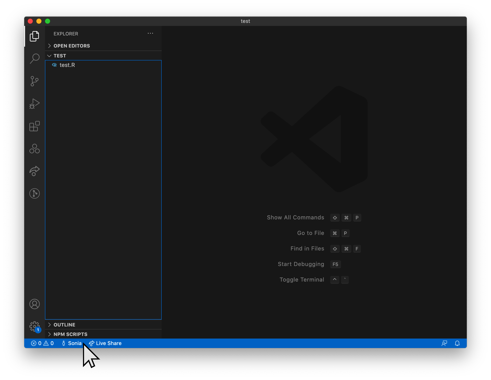

Visual Studio Code and Live Share
February 07 2021
vscode_liveshare.RmdVisual Studio Code
Visual Studio Code (aka VS Code) is an IDE (Integrated Development Environment) just like RStudio, but designed by Microsoft for multiple languages, not just R. As such, it’s much more advanced than RStudio, but not as well tailored to working in R. We recommend using RStudio for most of your work, but it may be useful occasionally to switch to VS Code, particularly if you want to work together with someone on a single piece of code. You can learn more about using VS Code here.
Installing VS Code
First, download and install Visual Studio Code (Note: this is not the same as the Visual Studio IDE, if you happen to have that installed).
Live Share
The VS Code Live Share extension provides a great way to collaborate on code whilst working from home. Assuming read/write access is enabled, you and your team mates can edit the same exact code, highlight sections of it, save it, and run it in real-time.
Just bear in mind that when you edit and run the code, it really happens on whoever’s machine set up the share, which means you won’t have access to any objects that aren’t in their own environment or datasets that aren’t on their machine, and collaborators working with you will have get the files separately later. On the plus side, you don’t have to go into the office and you can access code remotely using your own personalised setup and tools.
Install the extension
Open up VS Code and install the “Live Share” Microsoft extension from the VS Code marketplace. Exactly what this will look like depends on your platform, but this is on a Mac.

While you’re there, if you’re intending to work in R, you may as well install:
- the “R” Extension Pack and
- the “R LSP Client” REditorSupport extension.
You need to already have an account on GitHub to use Live Share.
Share a session
To create a new session, click on “Live Share” in the status bar (at the bottom of the VS Code window). The first time you do this, you’ll be prompted to sign in. Selecting “Sign in with GitHub” will open a link in your browser.

“Authorize VisualStudioLiveShare” and accept ALL OF THE THINGS…

You’ll know you’re logged when your name appears in the status bar to the left of the Live Share icon.

At this point an invite link should be copied to your clipboard, which you can share with your team mates.
To create a new invite link, do any of the these things:
- Click on Live Share in the status bar
- Click on your name in the status bar and select “InviteOthers (Copy Link)”
- Click on the “Live Share” icon in the side bar to open a Live Share panel, and select “Share (Read/Write)”

Once you’ve collaborated with someone they’ll be added to your contacts and if they’re online you can invite them directly by clicking on the “Invite Contact” icon next to their name.

To end the session, do one of the following:
- Click on your name in the status bar and “Stop Collaboration Session”
- Select the “Stop collaboration session” icon in the Live Share panel
More info here.